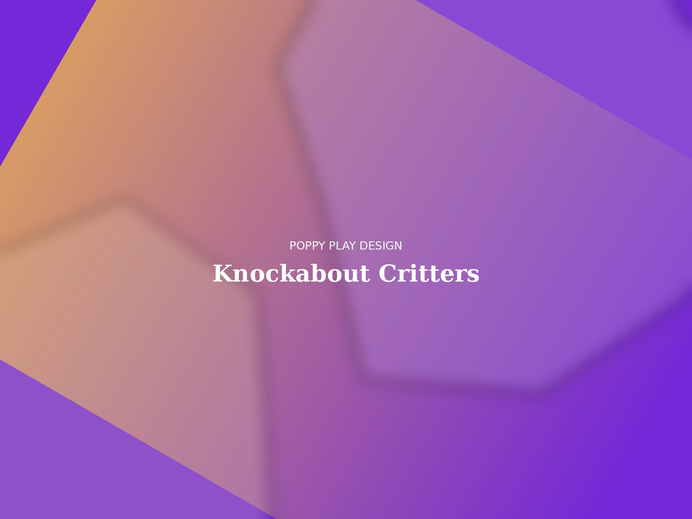
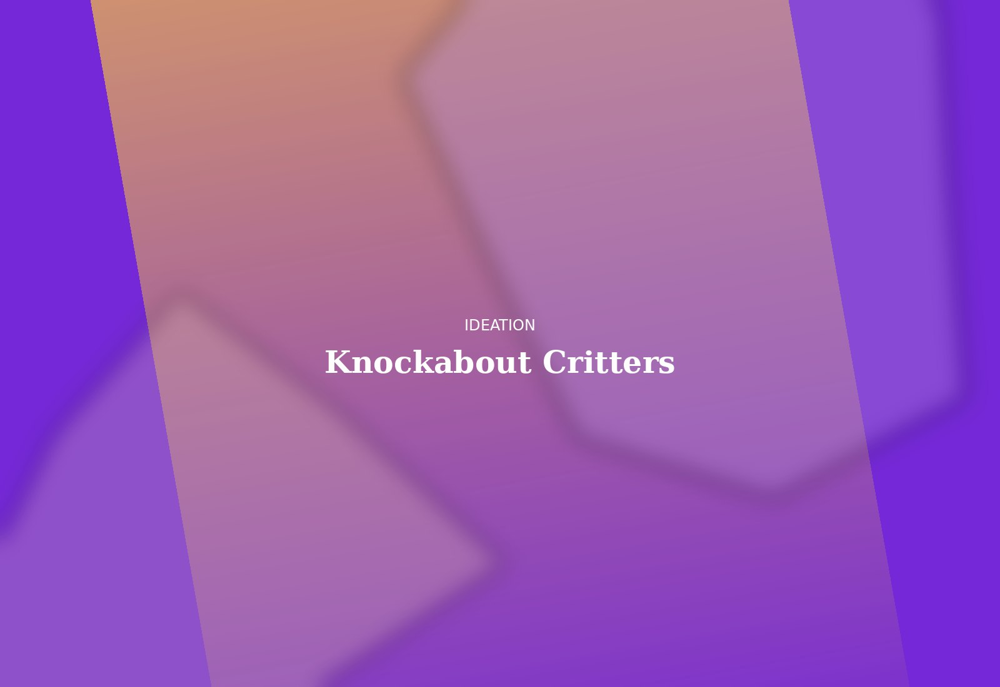
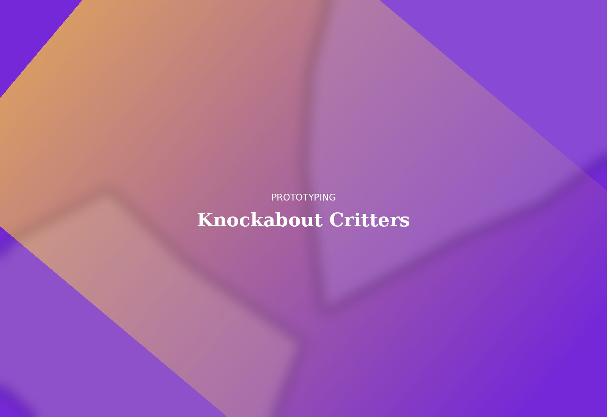
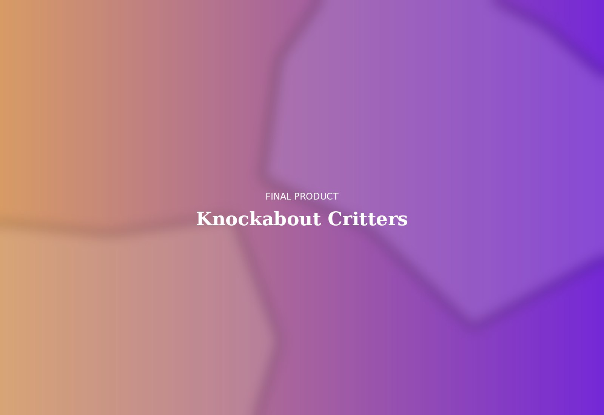

Soft & Resin Hybrid
A line of small cast-resin animal figures paired with soft cotton "shells," designed to be knocked over, refilled, and rearranged endlessly. The challenge was getting a hard material to feel forgiving — both physically and visually — alongside its plush counterpart.


Rounded, weighted silhouettes explored to favor a satisfying wobble-and-right motion.

Weight-distribution casts tested for self-righting balance, paired with hand-sewn fabric shell mockups.

Hand-poured tinted resin bodies with organic cotton shells, finished in a five-color palette.